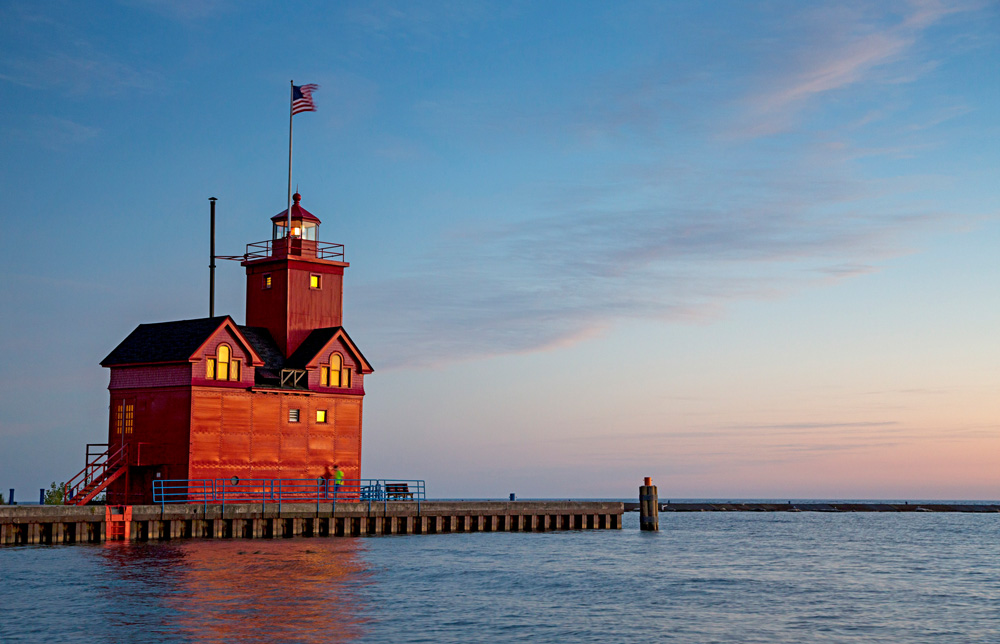
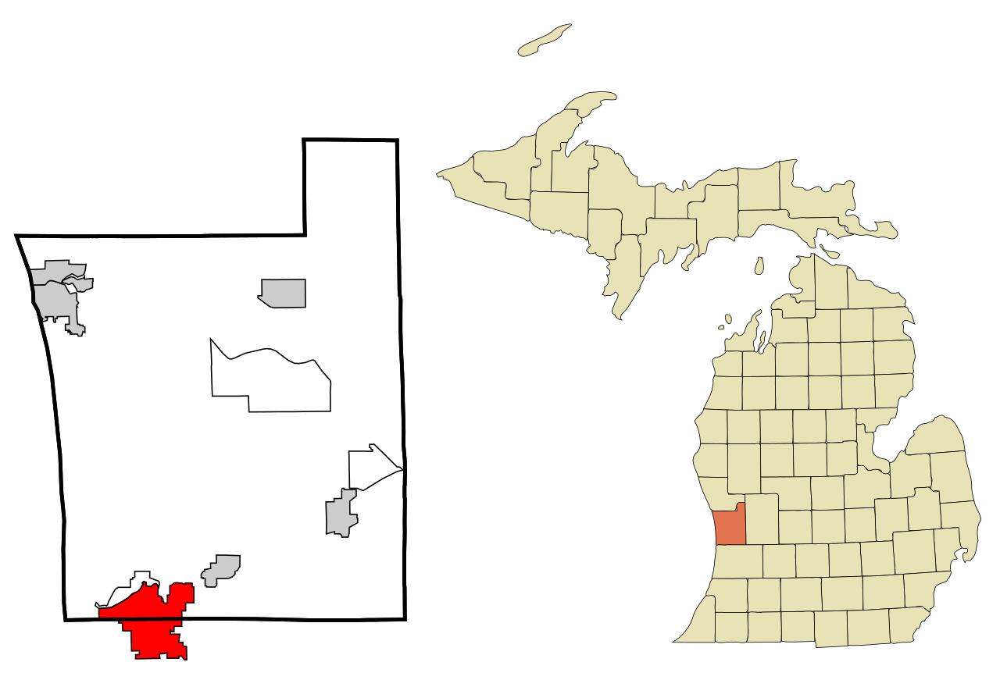

Kirk Waters

Entry One:
Me and this guy named Sam have been traveling together for quite a while. We were never really close prior to our journey, in fact, he was just my gardener.
Until, of course, he was dropping eaves at my window late at night and heard some things he wasn't supposed to. Then a really really old friend of mine told him
that he had to go with me on a dangerous journey. So far though he hasn't been all bad, pretty good cook actually.
Entry Two:
We just met a, umm, creature of some sort that's called Gollum. He's a bit odd, but honestly adds to the excitment a little. I was getting sick of Sam's constant complaining.
Gollum even said he knows where to go. Which is really good because we were very lost. I was starting to think Sam may have noticed that we were going in circles for the past two weeks.
Hopefully we can trust Gollum. Can't really imagine he'd have any alterior motives.
Entry Three:
Ok, so Gollum, not a good guy. Apparently he used to be like me and Sam, but that was like, a few hundred years ago or something.
I guess my uncle stole something very precious from him by cheating in a riddle contest. Which sounds like
Bilbo,
if I'm honest.
It's been a long time coming for me in terms of coding. I first had a little interest in coding in college, but at that point, I honestly thought I would be so behind that it wouldn't even be worth it.
After college, I ended up working for about 3 years in a multitude of jobs before I ever got any exposure to coding. It wasn't until I was on the Compensation Team with Quicken Loans that I started realizing that I might actually have a knack for coding. First it was just simple recorded macros, then I took some online courses in Python and C#, and eventually got the opportunity to get into the DevBuild program.
My hometown in Holland, MI. Unfortunately, I only lived there for 9 years, but it's still easily one of my favorite places.

Holland is a city in the western region of the Lower Peninsula of the U.S. state of Michigan.
It is situated near the western shore of Lake Michigan on Lake Macatawa, which is fed by the Macatawa River (formerly known locally as the Black River).
The city spans the Ottawa/Allegan county line, with 9.08 square miles (23.52 km2) in Ottawa and the remaining 8.13 square miles (21.06 km2) in Allegan.
As of the 2010 census, the population was 33,051, with an urbanized area population of 113,164, as of 2015.
Holland is the largest city in Ottawa County, and as of 2013 part of the Grand Rapids–Kentwood–Muskegon Combined Statistical Area.
Holland was founded by Dutch Americans, and is in an area that has a large percentage of citizens of Dutch American heritage.
It is home to Hope College and Western Theological Seminary, institutions of the Reformed Church in America.
In February 1996 the Holland City Council approved a sister city relationship between Santiago de Querétaro, Querétaro, Mexico and the City of Holland.
Source: Wikipedia
